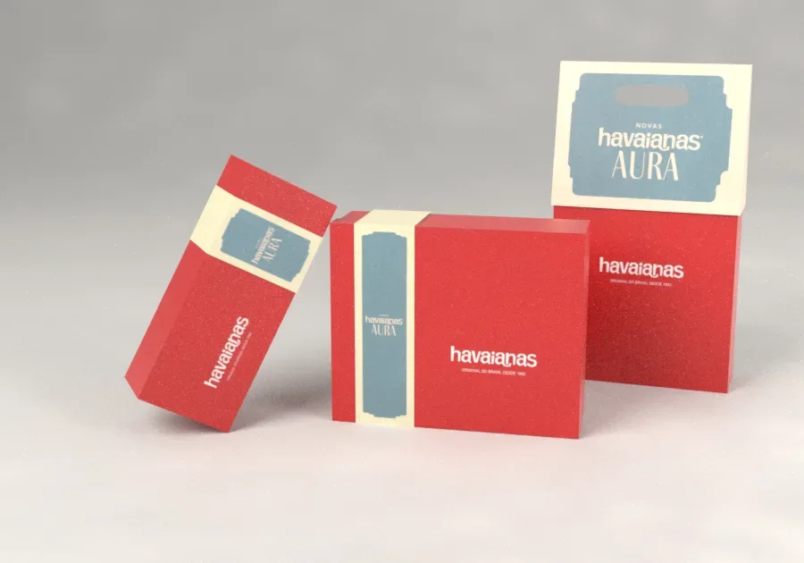
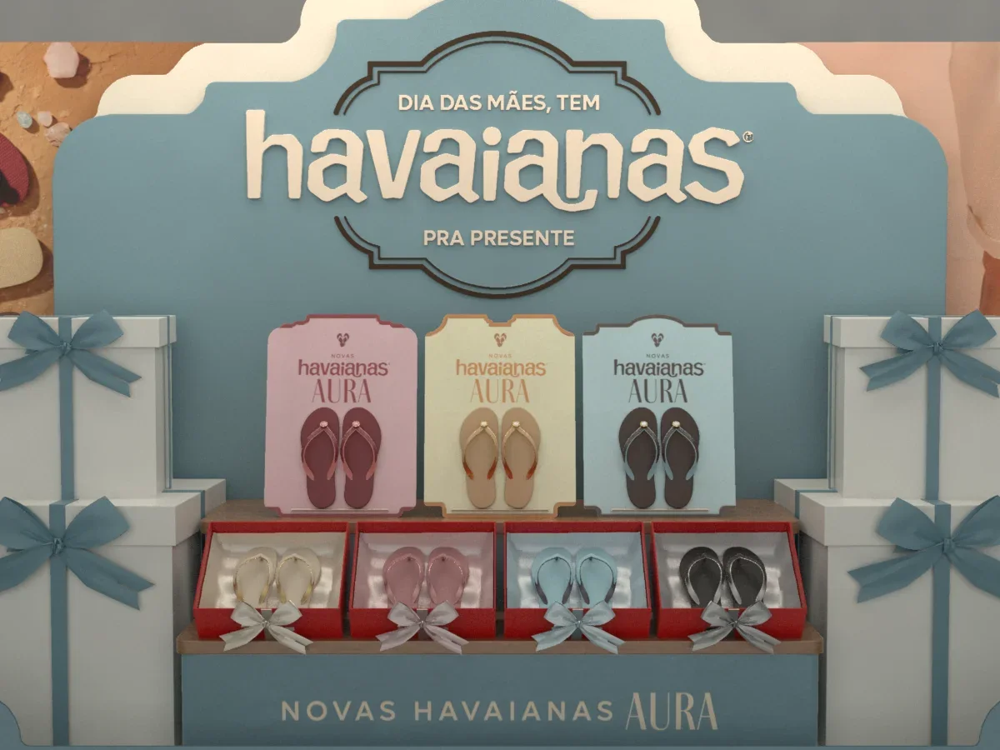
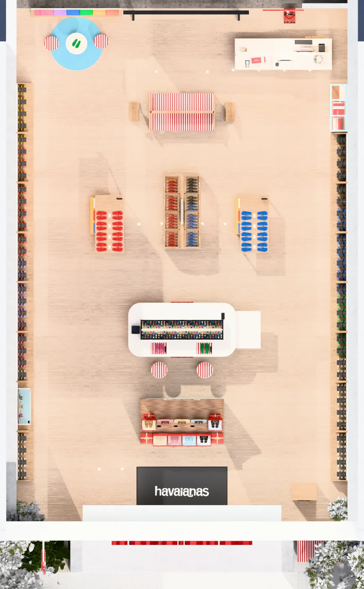
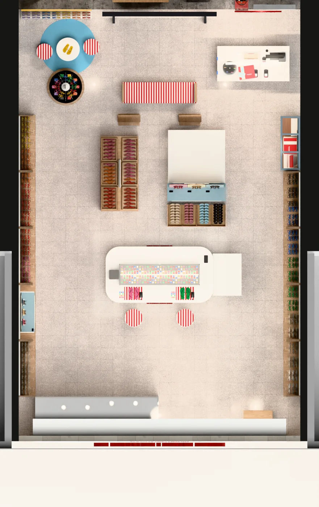
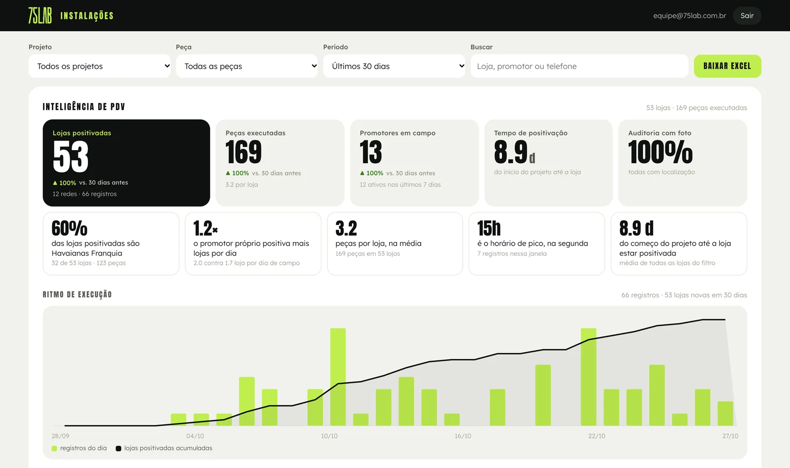
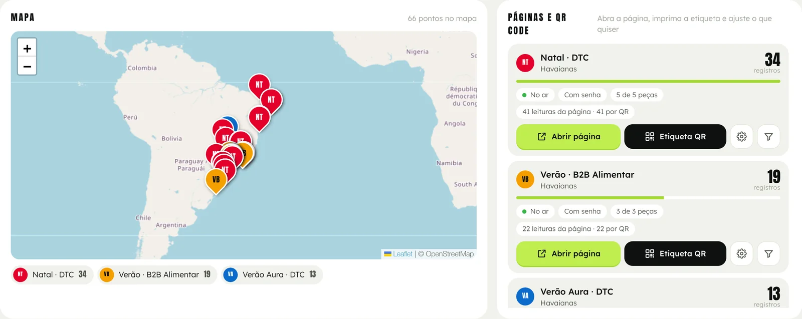
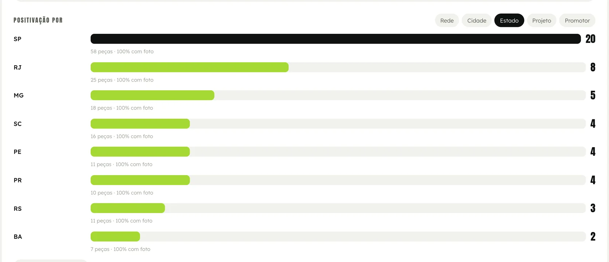

Havaianas pra presenteNovas Havaianas AuraDTC Lojas PrópriasDTC FranquiasB2B Varejo12 de abril de 2027Havaianas pra presenteNovas Havaianas AuraDTC Lojas PrópriasDTC FranquiasB2B Varejo12 de abril de 2027
Sexta-feira, 8 de maio de 2027. 12h40.
Ela tem quinze minutos de almoço, não sabe o número da mãe e ainda não comprou nada.
Ela não vai procurar um presente.
O presente é que precisa encontrar ela.
Esta apresentação é sobre esses quinze minutos.01
Capítulo 01 de 11
O desafio
O que a Alpargatas pediu, canal por canal, e como lemos o pedido.
01O briefing em uma página
02O que cada canal pediu
03A nossa leitura
One page brief · Aura · Dia das Mães 2027
Adaptar o conceito global da Aura para a data mais emocional do varejo.
Job to be done
Adaptar o conceito criativo global da família Aura para o Dia das Mães, preservando os códigos globais e ampliando a relevância emocional da data.
Mensagem
Havaianas pra presente. Secundária: Novas Havaianas Aura.
Target
Mulheres AB/C, 25 a 45 anos, em centros urbanos, que já conhecem e amam Havaianas e valorizam detalhes refinados e estilo acessível.
Período
Go live em 12/04/2027, final em 10/05/2027. No B2B, PDVs positivados em 19/04.
KPIs
Different (Brand Power) · Talkability (earned media e impactos) · Sellout.
Reason to believe
Líder de mercado, com força no público feminino, que se conecta com a marca e quer produto novo.
O que a consumidora disse (pesquisas de features 2025 e 2026)
Brilho no detalhe
O enfeite metálico na tira é percebido como diferencial e justifica preço maior.
Pedra é status
Pedras sinalizam elegância e são muito valorizadas.
Elegância é equilíbrio
Design limpo, em que cada detalhe parece intencional.
Mais ocasiões
O chinelo com enfeite amplia as ocasiões de uso.
Fonte: [BID] Briefing Criativo Aura · Dia das Mães 2027, Alpargatas · Havaianas Express Toolkit Aura.
Três canais, três jeitos de encontrar o mesmo presente.
DTCLojas Próprias
Mesa principal Big Hello com o KV e as caixas das embalagens
Desdobramento do KV para as prateleiras
Embalagens: sacola, luvas e envelopes
Vitrine e cenografia, com ativação conjunta no mezanino da Oscar Freire
Na loja em 12/04/2027
DTCFranquias
Mesa com as caixas das embalagens institucionais, composição limpa
Mesa da Compacta 4 como referência do Big Hello
Outras versões do KV nas prateleiras
Kits presenteáveis: tecidos e fitas para quem compra a embalagem
Na loja em 12/04/2027
B2BVarejo
Alimentar: stopper, testeira, moldura de gôndola, tag, wobbler, placa de carrinho, pontas e ilhas
Cross-merchandising para alavancar sell-out
Volume de chinelos nas ambientações e compra por impulso
SLA maior por negociação com as redes e redistribuição
PDVs positivados em 19/04/2027
Fonte: [BID] Briefing Criativo Aura · Dia das Mães 2027 · Pontos Franquias, Lojas Próprias e B2B.
A nossa leitura do briefing
Presente se compra em três tempos. A loja precisa servir os três.
0s
Para reconhecer
A data, a marca e o produto em uma leitura só, a três metros, antes de a cliente decidir entrar.
vitrine · ponta de gôndola · ilha · placa de carrinho
0s
Para escolher
As três cores dos Charms lado a lado, como joia, com preço e numeração à vista, sem precisar chamar ninguém.
Big Hello · glorifier · moldura · clip strip
0min
Para levar pronto
Caixa, fita, cartão e sacola na hora do caixa: o presente sai embrulhado e a campanha vai para casa.
Gift Station · embalagens · cartão
02
Capítulo 02 de 11
Como chegamos aqui
O processo de criação, em um prazo curto e sem pular etapa.
01O processo, dia a dia
02Imersão e pesquisa desk
03Referências e benchmark
O KV chegou numa segunda, às 18h30. A entrega era na sexta, às 17h.
0dias úteis do briefing à entrega, com o feriado de 20/11 no meio
0pessoas no núcleo do case: direção, criação, tráfego e atendimento
0hde trabalho no case, 30,4 h apontadas tarefa a tarefa no Ariuno
0renders aprovados na 5ª rodada, de 17 peças em 3 canais
0executivos de engenharia em Rev. 00, já em revisão para o aprovado
Convite da fase 2Apresentação do caseBriefing por e-mailKV e guia · 18h30Entrega no COUPA · 17h
Imersãobriefing, toolkit Aura e histórico
Pesquisa deskmarca, consumidora e lojas reais
Referências e benchmarkart déco, joalheria, PDV de presente
Produto e lojas em 3Dpares aprovados na R02
KV de trade4 ajustes e hierarquia
Desdobramento17 peças, 5 rodadas de render
Engenharia15 executivos, revisão em curso
Lojas, plantas e renders4 lojas e 21 vistas
Cronogramas e proposta1.155 entregas medidas
Fonte: e-mails da Alpargatas de 17, 19, 23 e 24/11/2026; Ariuno, sistema de gestão da 75 LAB (case: 30,4 h apontadas pela criação, mais as horas de direção, 3D e lojas medidas pelos arquivos do projeto).
Antes de desenhar, lemos a marca, a consumidora e a loja.
O que a marca diz
94%dos brasileiros têm um par
200 milPDVs no país
70 pde diferença no top of mind
O guide pede ginga, humor e calor, nunca o minimalista frio nem o excesso: o ponto doce entre os dois.
O que a consumidora diz
O metal na tira justifica preço maior
Pedra é elegância e status
Elegância é desenho limpo e intencional
Enfeite amplia a ocasião de uso
Por isso a Aura é exposta como joia: um par por frame, com espaço em volta.
O que a loja real faz
Logo vermelho em letra caixa e placa oval no caixa
Placa oval de preço na ponta do gancho
Numeração em etiqueta redonda e tabela de medidas
Banco listrado vermelho e branco
No supermercado, testeira vermelha com um logo só
As lojas foram limpas e refeitas nesse padrão antes de receber a campanha.
Fontes: Guide de Marca Havaianas (Select VBI); Briefing Aura, Consumer Insights (Features Research 2025 e 2026); pesquisa em fotos públicas de lojas Havaianas, franquias e gôndolas em 2025 e 2026.
Quatro referências e uma regra para cada uma.
Art déco vernacular
As molduras das portas e janelas das casas brasileiras viram a faca de todas as peças.
Regra: a borda é a marca.
Joalheria
O charm de pedra marmorizada pede vitrine de joia: frame, cetim e luz.
Regra: um par por frame.

O presente pronto
Caixa vermelha institucional, fita na cor do modelo e laço dourado.
Regra: a embalagem é peça de PDV.
A loja Havaianas real
Parede por cor, letra caixa vermelha e comunicação enxuta.
Regra: a campanha entra, a loja continua Havaianas.
Benchmark · o que observamos em PDV de presente
Presente se escolhe por corAs três cores lado a lado decidem mais rápido que o produto sozinho.
Preço à vista reduz atritoPlaquinha em L em todo frame e tag em toda cor.
Embrulhar é parte da compraQuem embala na hora tira a última objeção do caixa.
No supermercado, volume vendeMuitos pares ao alcance da mão, fora do corredor de calçados.
Fontes: Briefing Aura (moodboard e design system); referências de joalheria do moodboard Aura Charms; observação de PDV pela 75 LAB.
03
Capítulo 03 de 11
Do KV de lançamento ao KV de trade
O racional de desdobramento do KV que a Alpargatas nos deu.
01O KV que recebemos
02Os quatro ajustes
03A ordem de leitura
04De 2,6 m a 15 cm
O ponto de partida
Recebemos um KV de lançamento.
O KV global da Aura: os três Charms em cards art déco sobre o azul, o logo new havaianas Aura e a frase em inglês.
O que já funcionavaO azul, os cards art déco que emolduram o produto e a fotografia dos pares. É a base de tudo, e foi mantida.
O que a data pedeFalar de presente, em português, numa frase que se lê em dois segundos.
KV recebido · new havaianas Aura
Quatro ajustes e o KV passa a falar de presente.
1234
O KV recortado na faca art déco dos cards vira o contorno das testeiras, do adesivo de vidro e das laterais.
Sai o inglês, entra “Dia das Mães, tem Havaianas pra presente”: data, marca e solução numa leitura só.
A moldurinha do logo amarra frase e marca e funciona sozinha nas peças pequenas.
“Novas Havaianas Aura” desce para o rodapé, sem disputar com a data.
KV de trade desenvolvido pelo time de criação da 75 LAB a partir do KV global Aura enviado pela Alpargatas em 23/11/2026.
Uma ordem de leitura para todas as peças
Marca, data, produto, lançamento.
1MarcaHavaianas é sempre o maior elemento, dentro do selo.
2Data e chamada“Dia das Mães, tem … pra presente” abraça a marca no selo.
3ProdutoOs pares nos frames, de frente para a shopper: a Aura é o presente.
4AssinaturaNovas Havaianas Aura, no rodapé de cada peça.
A leitura em Z da comunicação visual e o Sistema 1 de Kahneman: a shopper decide no automático, então a ordem nunca muda de uma peça para outra.
1234
O mesmo selo funciona de 2,6 metros a 15 centímetros.
O desdobramento não redesenha a campanha em cada peça: aplica as mesmas regras em cada tamanho. É o que mantém a unicidade de marca do DTC ao B2B.
2,6 milha2,2 mponta de gôndola

vitrinelockup em relevo2,0 mBig Hello100 cmtesteira15 cmwobbler18 cmtag
KV com imagem. Quando a peça tem área para foto, a moldura abre uma janela com a Aura em uso. O selo, os frames e a assinatura ficam no mesmo lugar.
04
Capítulo 04 de 11
A estratégia por trás das peças
Conceitos de trade marketing e de marketing que justificam cada escolha.
01Sete conceitos, sete decisões
02A jornada do presente
Nenhuma peça é decoração. Cada uma responde a um conceito.
Os primeiros segundos diante da gôndola decidem a compra. O shopper marketing planeja tudo o que influencia a shopper no caminho até o caixa. Por isso a primeira peça que se vê, a mesa ou a vitrine, carrega a campanha inteira.Cerca de 76% das decisões de compra no varejo de massa são tomadas dentro da loja. No supermercado a Aura disputa atenção com a categoria inteira: a peça é a última mídia antes do caixa.A shopper decide no automático, rápido e por associação. A mesma ordem em todas as peças (marca, data, produto, assinatura) faz o reconhecimento acontecer sem esforço, em três segundos.A marca cresce quando é fácil de reconhecer. O frame art déco e o selo se repetem do wobbler de 15 cm à ilha de 2,6 m e viram ativo da Aura, não só da campanha.Dar presente é um ritual: escolher, embrulhar e entregar. A Gift Station e as embalagens tiram da shopper o trabalho do embrulho e entregam o presente pronto, com cartão.Nos primeiros passos depois da porta a cliente ainda está ajustando o olhar. O Big Hello fica depois do tapete, onde a atenção já chegou, e não colado na entrada.Produtos complementares vendem juntos. O clip strip com cinco pares na gôndola de praia leva a Aura a quem foi comprar protetor e toalha, e a compra por impulso acontece fora do corredor de calçados.
Referências acadêmicas e de mercado citadas em cada conceito.
Ver, parar, escolher e levar. Cada canal tem uma peça para cada passo.
1Veratração
2Pararinteresse
3Escolherdesejo
4Levaração
DTC Lojas Próprias
Fachada e vitrine
Mesa Big Hello R5
Glorifier e frames
Gift Station e embalagens
DTC Franquias
Vitrine
Big Hello na mesa atual
Glorifier e caixotes
Gift Station e sacola
B2B Varejo
Placa de carrinho e testeira
Ponta de gôndola e ilha
Moldura, wobbler e tag
Clip strip e volume no gancho
A sequência AIDA (atenção, interesse, desejo e ação) aplicada ao espaço: cada peça tem um trabalho só, e nenhuma disputa com a outra.
AIDA: E. St. Elmo Lewis (1898), em Kotler e Keller, Administração de Marketing.
05
Capítulo 05 de 11
DTC Lojas Próprias
A loja de rua com a campanha inteira: onde cada peça está e por quê.
01A planta da loja
02A loja pronta
Planta vista de cima · loja de rua · 8 × 12 m
Cada peça no lugar da jornada.

entrada
A loja própria no dia 12 de abril.
As peças aprovadas
Renders da 75 LAB: peças finais aprovadas aplicadas na loja de rua modelada em 3D, com a comunicação institucional no padrão das lojas Havaianas.
06
Capítulo 06 de 11
DTC Franquias
A loja de shopping: a campanha entra na mesa e na parede que a franquia já tem.
01A planta da loja
02A loja pronta
Planta vista de cima · loja de shopping · 6 × 9 m
Investimento do franqueado onde a venda acontece.

corredor do shopping
A franquia vestida para o Dia das Mães.
As peças aprovadas
Renders da 75 LAB: peças finais aprovadas aplicadas na loja de shopping modelada em 3D. A vitrine de vidro foi acrescentada à frente aberta da loja para receber a peça.
07
Capítulo 07 de 11
B2B Varejo
Store in store no hipermercado e corredor de supermercado: volume, impulso e cross-merchandising.
01A planta do hipermercado
02A planta do corredor
03O varejo pronto
Planta vista de cima · store in store em hipermercado
A ilha puxa o fluxo do corredor principal.
corredor principal do hipermercado
Planta vista de cima · corredor de supermercado
A Aura dentro e fora do corredor de calçados.
corredor principal
No varejo, volume na mão e presente fora da categoria.
As peças aprovadas
Renders da 75 LAB: peças finais aprovadas aplicadas no store in store e no corredor de supermercado modelados em 3D.
08
Capítulo 08 de 11
Da arte à fábrica
As engenharias, em desenvolvimento, e a inteligência de produção que leva a peça à loja.
01As engenharias
02A inteligência de produção
Em andamento · status de 26/11/2026
A peça é desenhada para a fábrica, não só para o render.
Mesa Big Hello202 × 109,5 × 194,4 cm · base em camadas, 2 tampos, cavaletes e caixasRev. 00 confere com o aprovado
Ilha232,9 × 128 × 263,5 cm · cubos giratórios de 52 cm e adesivo de piso Ø 268 cmRev. 01 · foto das laterais
Ponta de gôndola120,5 × 53,2 × 237,1 cm · testeira em relevo e laterais com a foto do KVRev. 01 · foto das laterais
Peças leves de gôndolastopper, testeira, moldura, tag, wobbler, clip strip e placa de carrinho em PS de 1 e 2 mmfacas cotadas prontas
Embalagenssacolas P, M e G, caixas com luva e caixa envelope, com planificado e UVRev. 01 · sacola com solapa
Vitrine e Gift Station modularárea útil de 373,6 × 105 × 204,3 cm e módulos da estação de presenteRev. 01 · versão aprovada
Glorifier e mesas das franquiasframes em PS, ganchos e peça em L sobre a mesa atual da lojaem desenho
Cada executivo leva à fábricavisão geral com render azul e rosavistas e faca cotadas 1:1componentes, substrato e acabamentofaixas de cotação por famíliaaproveitamento de chapaguia de montagem
Executivos da 75 LAB para o case Aura, Rev. 00 de 24/11/2026, em revisão para os renders aprovados de 25/11. Materiais e quantidades ainda em fase de cotação.
Da gráfica à loja, sem perder a verba no caminho.
Compra por família
Peças agrupadas por material (PS, MDF, metalon, papel cartão) para negociar volume e não peça a peça.
Três cotações
Toda peça com três orçamentos e o comparativo aberto para a Alpargatas.
Protótipo e QA
Protótipo testado antes do lote e conferência de qualidade por lote.
Kitting por loja
Um kit por loja e por formato, com romaneio e guia de montagem.
Logística por canal
Lojas próprias em ondas, franquias no Brasil todo, B2B nos CDs das redes com agendamento.
QR em cada peça
Recebimento, instalação com foto e a próxima tiragem calibrada pelo que foi instalado.
Como protegemos cada verba
Lojas PrópriasCenografia e vitrine com peça reaproveitável no mezanino e na próxima campanha.
FranquiasPeças que vestem a mesa atual: o franqueado não compra móvel novo, compra comunicação.
B2B VarejoPeças leves em PS que vão no malote e só as estruturas que vendem volume (ponta e ilha) em lote.
Processo de produção da 75 LAB. Cada verba do briefing inclui produção, logística, gestão da campanha e kits de embalagens.
09
Capítulo 09 de 11
Gestão da operação
Ferramentas, metodologia, dashboards e o rastreio peça a peça.
01O sistema de gestão
02SharePoint e central da rede
03Rastreio por QR code
04O painel
Ariuno · o sistema de gestão da 75 LAB, personalizado para a conta
Entrada, saída e avaliação de cada material, passo a passo.
EntradaSaídaAvaliação
Sem login: o trade abre o link da campanha e marca as peças. As peças do escopo já vêm mapeadas por canal: Lojas Próprias, Franquias e B2B.
A peça que vale para vários formatos vira uma por formato, para não chegar mesa grande em loja compacta.
O time entrega a arte dentro da própria peça. Cada versão fica guardada com data e autor.
Aprovação ou ajuste marcado em cima da arte: ponto numerado, seta, área destacada e anexo.
Aprovadas, esperando vocês, em ajuste e em criação. O tempo de aprovação aparece separado do tempo da agência.
ariuno.com.br/?briefingFee=…
Passo 1 de 5
1Entrada · o trade pede pelo link2 e 3Uma peça por formato, com a arte dentro4Avaliação · ajuste marcado na arte5A situação de cada material
Fonte: Ariuno, sistema de gestão da 75 LAB, em modo demonstração · campanha de exemplo Dia das Mães + Aura.
Simulação · a central que montamos para a conta
Uma central só para a rede, a agência e vocês.
E-mail e WhatsApp numa caixa só: cada conversa de franqueado vira ticket ligado à loja, com prazo.
Cada loja com formato, planta, fotos e pontos de visibilidade.
Lojas Próprias, Franquias e B2B no mesmo calendário.
O acervo fica no SharePoint de vocês, organizado por campanha, formato e loja.
Onde cada campanha está e o relatório que chega sem ninguém pedir.
01Atendimento à rede02Base de lojas e layouts03Cronograma integrado04SharePoint integrado05Status e report
Simulação da central de rede e gestão da 75 LAB com dados de exemplo · nenhum dado de cliente.
Cada peça tem um código único e conta a própria história.
HAV-DM27-BHL-0128Big Hello · Dia das Mães 2027 · loja 0128
1 · Código na peça
Cada peça sai da gráfica com etiqueta própria, não um QR de campanha.
2 · Expedição
O scan na saída do fornecedor registra o que foi para cada loja.
3 · Recebimento
A loja escaneia ao receber: relatório em D+2.
4 · Instalação com foto
Montada, fotografada, com GPS: relatório em D+7.
5 · Auditoria
Amostra por loja e ocorrência automática de quem não leu.
6 · Painel
Ao vivo, por loja, rede, formato e estado, desde o primeiro envio.
QR em etiquetamaterial de campanha, em massatesteira, wobbler, stopper, tag, clip strip, placa de carrinho
GPS ou BLEativo caro que voltamesa Big Hello, Gift Station, ilha, ponta de gôndola, cenografia
Já está no aro scan abre a página da peça, com montagem e vídeo, e registra loja, GPS e fotoem uso nas peças que produzimos hoje
Painel do QR · demonstração com dados de exemplo
O scan da loja chega ao painel na hora, com GPS e foto.
Clique nas abas para trocar a vista do painel
projetos.75lab.com.br/produtos/painel



Cada leitura gravaloja, rede, promotor, GPS com a precisão e a foto da fachada.
Loja pelo GPSaté 150 m é a mesma loja: o painel conta lojas, não leituras.
Positivação do B2Bem 19/04 o painel mostra quantos PDVs já estão com a Aura, rede a rede.
Excel e link ao vivotudo em Excel num clique, e o trade acompanha por link sem login.
Números e ritmoMapa das lojasPor estado
Fonte: painel do QR da 75 LAB em modo demonstração · dados de exemplo, nenhum dado de cliente.
10
Capítulo 10 de 11
Estrutura e modelo comercial
O time por escopo, a governança e o fee mensal fixo.
01Estrutura de atendimento
02Governança e indicadores
03Modelo de remuneração e tributos
Três estruturas dedicadas, uma só direção de marca.
DTCLojas Próprias
Gestor(a) de conta LPpauta, cronograma, vitrine e cenografia
Designer 3D e engenhariamesa, vitrine, cenografia do mezanino
Designer gráfico e arte-finaldesdobramento e embalagens
Produtor(a) de campoprotótipo, instalação e ativação
DTCFranquias
Gestor(a) de conta Franquiaspauta, adesão e grade por loja
Designer gráfico e arte-finalpeças por formato de loja
Atendimento à rede e SACfranqueados por WhatsApp e e-mail
Analista de logísticakits, envio loja a loja e ocorrências
B2BVarejo · estrutura única
Gestor(a) de conta B2Balimentar e especializado
Designer gráfico sêniorMPDVs e artes rápidas
Produtor(a) de fornecedoresvolume, negociação e amostras
Analista de implementaçãoCDs, redes, promotoria e positivação
Compartilhados entre as três estruturasDiretor(a) de criação · unicidade de marcaArquiteto(a) e 3D · lojas modeladas e projetos especiaisAnalista fiscal · faturamento, SEFAZ e pagamentosProdutor(a) de fornecedores · compra por família
Funções, papéis e dedicação de cada perfil detalhados no open cost entregue no COUPA. Dimensionamento pelas horas medidas no Ariuno.
Vocês sabem onde cada coisa está sem precisar perguntar.
Todo diapainel ao vivo, atendimento à rede e status de cada peça no Ariuno
Semanalpauta com o trade de cada canal e report automático por e-mail
Quinzenalstatus de cada campanha, etapa a etapa, com riscos e decisões
Mensalfechamento de ciclo, indicadores e plano de melhoria
Trimestralrevisão estratégica e calendário seguinte
Indicadores da operação
SLA por tipo de entrega, com a espera de aprovação separada
Rodadas de ajuste por peça
OTIF de entrega por loja e por rede
Positivação e adesão por loja, medidas pelo QR
Custo por loja e por peça instalada
Indicadores do negócio, com os de vocês
Sell-out da Aura nas lojas positivadas contra as não positivadas
Brand Power e Talkability da campanha
Venda de embalagens presenteáveis e kits
Giro do feminino no B2B
Dashboards no Ariuno e no painel do QR; KPIs de negócio do briefing (Different, Talkability e Sellout).
Fee mensal fixo, custo aberto e sem honorário escondido.
Fee mensal fixo
Por estrutura: Lojas Próprias, Franquias e B2B. Sem honorários, agenciamento, BV ou comissão sobre produção.
Open cost detalhado
Cargo, senioridade, dedicação, horas, custo hora, overhead e margem de cada perfil, com todos os tributos. No documento comercial do COUPA.
Custos fora do fee
Produção física, frete, instalação, viagens fora da Grande São Paulo, tiragens extras e projetos especiais acima do escopo: sempre orçados à parte e aprovados antes.
Reforma tributária · como entra no preço
2026CBS 0,9% e IBS 0,1% em teste, compensáveis
2027CBS plena; PIS e Cofins extintos; IBS 0,1% em teste
2029 a 2032ISS e ICMS caem por etapas e o IBS sobe
2033IBS e CBS plenos, sem ISS
O fee de 2027 já está calculado com a CBS no lugar do PIS e da Cofins, e o crédito do IVA passa a valer para a Alpargatas na cadeia. Cada virada de alíquota é repassada pela regra do contrato, sem renegociar o fee.
EC 132/2023 e LC 214/2025 (reforma tributária do consumo). Valores no open cost entregue no COUPA.
11
Capítulo 11 de 11
Cronograma
De trás para frente, a partir da data de loja, com as durações que a gente mede.
01Os três cronogramas
02O que não pode escorregar
Começando em 1º de dezembro, cabe com folga medida.
duração medida no Ariuno (p80)aprovação da Alpargatas (SLA de 4 dias úteis)estimada, sem históricofolga planejadaem paralelo
Fonte: Ariuno, 1.155 entregas concluídas da 75 LAB de jul a nov/2026 (p80 por tipo de etapa). Feriados nacionais, aniversário de São Paulo e recesso de 24/12 a 01/01 descontados.
Três datas seguram o Dia das Mães inteiro.
06/012027Aprovação do desdobramento e dos renders (05/01 para Franquias)
19/022027Aprovação dos protótipos (18/02 para Franquias). A produção começa em 18/02.
17/022027Fechamento da adesão das franquias e da negociação de ponta e ponto extra nas redes B2B
O maior risco
A espera de aprovação: mediana de 3,5 dias úteis, mas p80 de 23,8. Uma 3ª rodada consome a folga inteira.
O que propomos
SLA de 4 dias úteis por rodada e no máximo 2 rodadas no desdobramento
Aprovação de peça gráfica por render, sem esperar protótipo
Peças táticas produzidas em paralelo às estruturais
Produção em 2 lotes, com as franquias primeiro
Fonte: Ariuno, lead time de aprovação de cliente (n=24), jul a nov/2026.
Domingo, 10 de maio de 2027.
A mãe abre a caixa vermelha, calça a Aura e sai para almoçar.


 Art déco vernacular
Art déco vernacular Joalheria
Joalheria A loja Havaianas real
A loja Havaianas real
 1234
1234


 corredor principal do hipermercado
corredor principal do hipermercado corredor principal
corredor principal


 ×
×